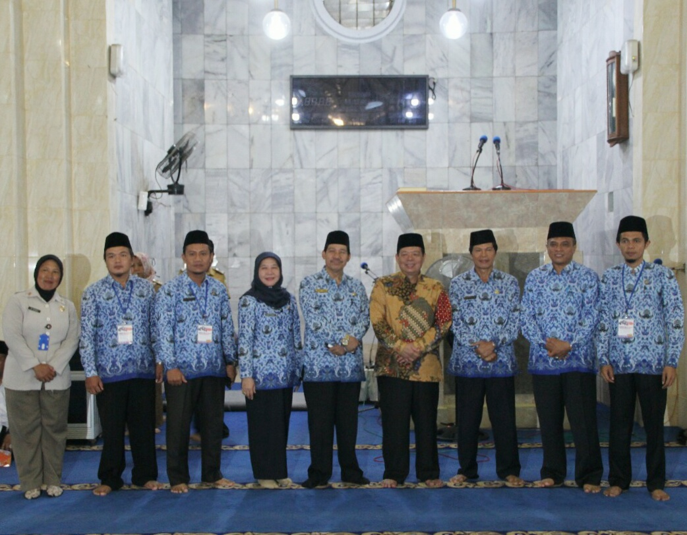
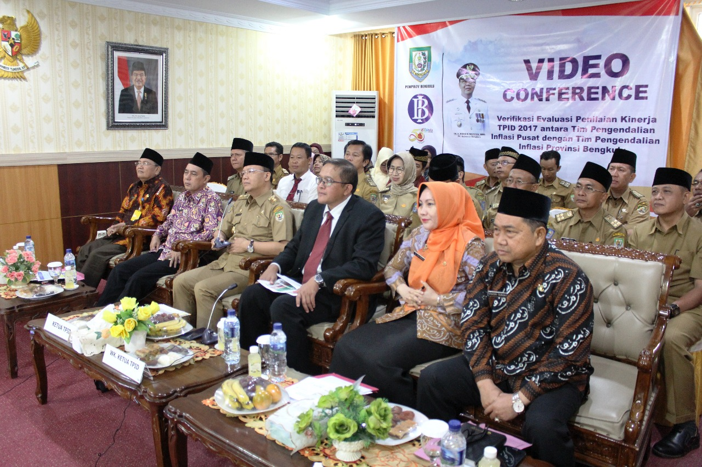
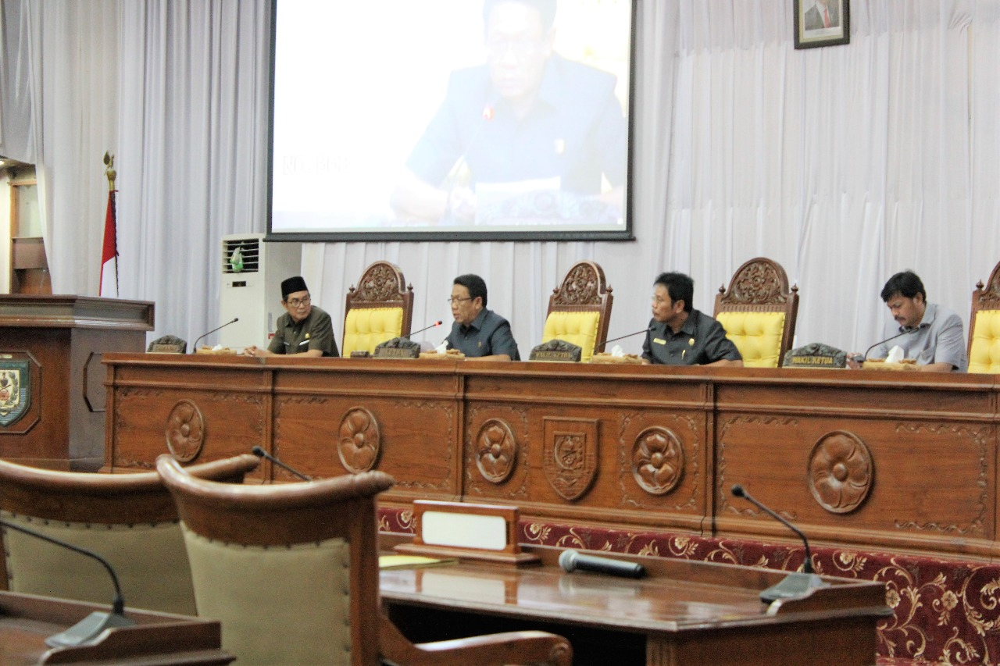

MTQ IV KORPRI, Perkuat Nilai Agama
Bengkulu – Pemerintah Provinsi Bengkulu menyelenggarakan Seleksi Musabaqah Tilawatil Qur’an (MTQ) IV Korpri tingkat Provinsi Bengkulu tahun 2018, di Masjid Agung At-Taqwa Kota Bengkulu, Senin(2/6).
Staf Ahli Gubernur bidang Kemasyarakatan dan Kesra Rusdi Bakar menyampaikan Aparatur Sipil Negara (ASN) sebagai anggota Korpri berperan menjadi Abdi Negara, Abdi Pemerintah dan Abdi Masyarakat. Nilai-nilai keagamaan ASN perlu diperkuat agar dalam menjalankan...
Baca selengkapnya>>>Inovasi Pengendalian Inflasi TPID Bengkulu Raih Apresiasi Tinggi PPIP
Bengkulu – Tim Pengendalian Inflasi Daerah (TPID) Provinsi Bengkulu mendapatkan apresiasi tinggi dari Tim Pengendalian Inflasi Pusat (TPIP), terkait inovasi dalam penurunan angka inflasi daerah. Atas inovasi ini, TPID Provinsi Bengkulu yang diketuai Plt Gubernur Bengkulu Rohidin Mersyah, masuk sebagai salah satu nominasi TPID terbaik se-Indonesia.
Plt Gubernur Bengkulu Rohidin Mersyah mengatakan, upaya menurunkan angka inflasi Bengkulu sejak 2 tahun terakhir saat ini telah menghasilkan capaian yang signifikan ...
Baca selengkapnya>>>Jawaban Gubernur Bengkulu Atas Pandangan Umum Fraksi-Fraksi DPRD Provinsi Bengkulu
Bengkulu – Sesuai jadwal yang telah ditentukan, Gubernur Bengkulu menyampaikan jawaban atas Pandangan Umum fraksi-fraksi DPRD Provinsi Bengkulu, terhadap Raperda tentang Pertanggungjawaban Pelaksanaan APBD Provinsi Bengkulu TA 2017, di ruang Rapat Paripurna, Senin (2/7/2018).
Rapat Paripurna yang ke–VIII Masa Persidangan ke-II Tahun Sidang 2018 ini, dipimpin oleh Ketua DPRD Provinsi Bengkulu Ihsan Fajri...
Baca Selengkapnya>>>